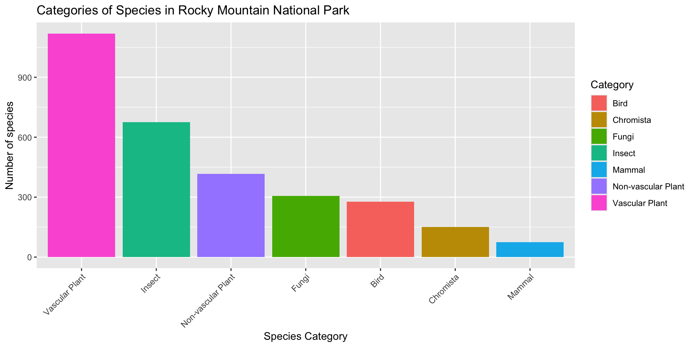

# A tibble: 6 × 28
ParkCode ParkName CategoryName Order Family TaxonRecordStatus SciName
<chr> <chr> <chr> <chr> <chr> <chr> <chr>
1 ACAD Acadia National … Mammal Arti… Cervi… Active Alces …
2 ACAD Acadia National … Mammal Arti… Cervi… Active Odocoi…
3 ACAD Acadia National … Mammal Carn… Canid… Active Canis …
4 ACAD Acadia National … Mammal Carn… Canid… Active Canis …
5 ACAD Acadia National … Mammal Carn… Canid… Active Vulpes…
6 ACAD Acadia National … Mammal Carn… Felid… Active Lynx c…
# ℹ 21 more variables: CommonNames <chr>, Synonyms <lgl>, ParkAccepted <lgl>,
# Sensitive <lgl>, RecordStatus <chr>, Occurrence <chr>,
# OccurrenceTags <chr>, Nativeness <chr>, NativenessTags <chr>,
# Abundance <chr>, NPSTags <chr>, ParkTags <chr>, References <dbl>,
# Observations <dbl>, Vouchers <dbl>, ExternalLinks <lgl>, TEStatus <chr>,
# StateStatus <chr>, OzoneSensitiveStatus <chr>, GRank <chr>, SRank <chr>Final Presentation
May 13th 2025
Project 1
National Parks Service Data on the 15 most popular National Parks
Data about every species in the park
Analyzed species categories (ex: Mammal, Insect, Plant)
- Originally, explored the species categories in Rocky Mountain National Park.
most_visited_nps_species_data |>
filter(ParkCode == "ROMO") |>
group_by(CategoryName) |>
summarize(count = n()) |>
filter(count > 50) |>
ggplot(aes(x = reorder(CategoryName, -count), y = count, fill = CategoryName)) +
geom_col() +
theme(axis.text.x = element_text(angle = 45, hjust = 1, vjust = 1))+
labs(
x = "Species Category",
y = "Number of species",
title = "Categories of Species in Rocky Mountain National Park",
fill = "Category"
)
Shiny Updates
Used Shiny to make the database more interactive
Using reactive
Here is the UI code for the Shiny app:
library(shiny)
library(tidyverse)
# Define UI
sidebarLayout(
sidebarPanel(
selectInput(
inputId = "selected_park",
label = "Choose a National Park:",
choices = NULL, # Start with an empty list
selected = "ROMO"
),
radioButtons(
inputId = "plot_type",
label = "Select plot type:",
choices = c("Bar Chart" = "bar", "Pie Chart" = "pie"),
selected = "bar"
),
selectInput(
inputId = "exclude",
label = "Exclude Species Categories:",
choices = NULL, # Start with an empty list
multiple = TRUE,
selectize = TRUE
),
sliderInput(
inputId = "top_n",
label = "Number of species categories to show:",
min = 1,
max = 10,
value = 5
)
),
mainPanel(
plotOutput("species_plot")
)
)Here is the server code for the Shiny App:
library(shiny)
# Define Server
server <- function(input, output, session) {
# Load the data and park names with reactive
most_visited_nps_species_data <- reactive({
readr::read_csv('https://raw.githubusercontent.com/rfordatascience/tidytuesday/main/data/2024/2024-10-08/most_visited_nps_species_data.csv', show_col_types = FALSE)
})
# Get park choices with reactive
park_choices <- reactive({
most_visited_nps_species_data() |>
select(ParkName, ParkCode) |>
distinct() |>
arrange(ParkName)
})
# Update the dropdown for parks
observe({
updateSelectInput(session, "selected_park", choices = setNames(park_choices()$ParkCode, park_choices()$ParkName), selected = "ROMO")
})
# Update the exclude categories
observe({
updateSelectInput(session, "exclude", choices = unique(most_visited_nps_species_data()$CategoryName))
})
# Filtering and creating the plot
output$species_plot <- renderPlot({
filtered_data <- most_visited_nps_species_data() |>
filter(ParkCode == input$selected_park) |>
filter(!CategoryName %in% input$exclude) |>
group_by(CategoryName) |>
summarize(count = n()) |>
arrange(desc(count))|>
head(input$top_n)
park_name <- park_choices() |>
filter(ParkCode == input$selected_park) |>
pull(ParkName)
if (input$plot_type == "bar") {
ggplot(filtered_data, aes(x = reorder(CategoryName, -count), y = count, fill = CategoryName)) +
geom_col() +
theme(axis.text.x = element_text(angle = 45, hjust = 1, vjust = 1)) +
labs(
x = "Species Category",
y = "Number of Species",
title = paste("Bar Graph of Species Categories in", park_name),
fill = "Category"
)
} else if (input$plot_type == "pie") {
ggplot(filtered_data, aes(x = "", y = count, fill = CategoryName)) +
geom_bar(width = 1, stat = "identity") +
coord_polar("y") +
theme_void() +
labs(
title = paste("Pie Chart of Species Categories in", park_name),
fill = "Category"
)
}
})
}